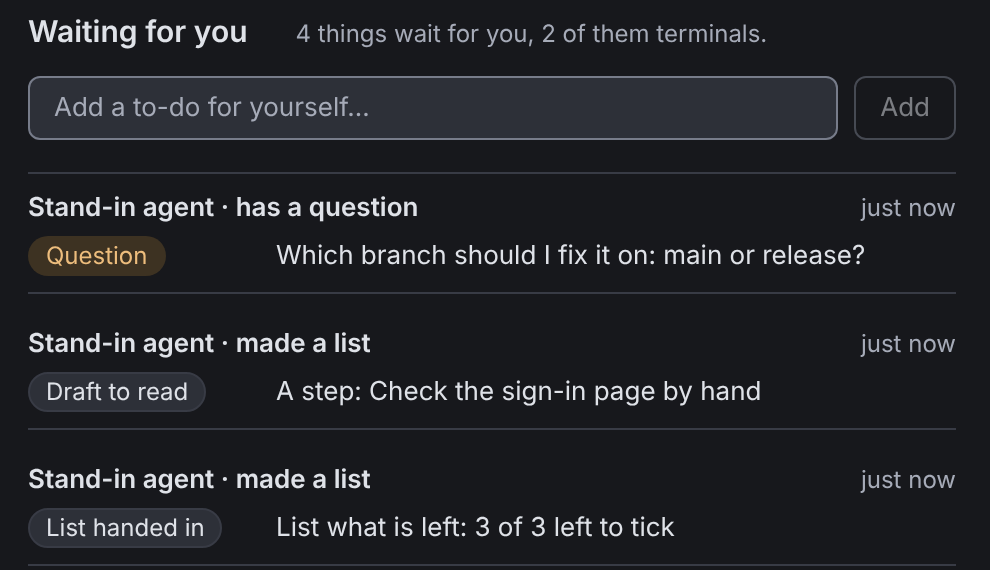

জানুন কখন Claude Code শেষ করেছে বা আপনার অপেক্ষায় আছে
আপনি Claude Code-কে একটি কাজ দেন, অন্য কিছুতে মন দেন, আর বিশ মিনিট পরে ফিরে দেখেন এটি দ্বিতীয় মিনিট থেকে একটি হ্যাঁ-র অপেক্ষায় বসে আছে। Aubergine এক পেজেই দেখায় কোন টার্মিনাল কাজ করছে, কোনটি আপনার অপেক্ষায় আর কোনটি শেষ করেছে।
সাধারণত লোকে কী করে
Claude Code কিছু মুহূর্তে হুক, মানে আপনার নিজের কমান্ড, চালায়, যেমন যখন এটি থামে (Stop) বা একটি নোটিফিকেশন পাঠায় (Notification)। প্রচলিত উপায় হলো আপনার Claude Code সেটিংসে একটি হুক যা শব্দ বাজায় বা ডেস্কটপ নোটিফিকেশন দেখায়। এটি কাজ করে, আর স্ক্রিপ্টগুলো লেখা ও রাখা আপনার দায়িত্ব।
Aubergine কী করে
Claude Code Aubergine থেকে চালু করুন: টার্মিনালের তালিকার একদম উপরে New terminal ▾ → Claude Code, বা C। Aubergine claude চালু করে এমন একটি সেটিংস ফাইল দিয়ে যা এটি নিজের ডেটা ফোল্ডারে তৈরি করে আর কমান্ড লাইনে উল্লেখ করে। আপনার নিজের Claude Code কনফিগারেশনে হাত দেওয়া হয় না। সেই ফাইলের হুকগুলো পেজকে জানায় এজেন্ট কী করছে:
- আপনি একটি প্রম্পট পাঠালে টার্মিনাল working (কাজ করছে) দেখায়, আর প্রম্পটটি তার নোটের লগে যোগ হয়;
- এজেন্টের আপনাকে দরকার হলে (অনুমতির প্রশ্ন, বা ইনপুটের অপেক্ষায় idle), এর রেখা অপেক্ষার রঙ নেয়, আর এর শিরোনাম ও তালিকায় এর সারিতে লেখা থাকে waiting for you (আপনার অপেক্ষায়);
- থেমে গেলে টার্মিনাল দেখায় finished (শেষ)।

For you-এর পাশের সংখ্যা, পেজের উপরে ডানদিকে, হলো আপনার অপেক্ষায় থাকা সব কিছু, প্রতিটি প্রজেক্ট জুড়ে: প্রশ্ন নিয়ে থাকা টার্মিনাল, আর অনুমোদনের অপেক্ষায় রান, পড়ার জন্য ড্রাফট আর প্রস্তাবিত টাস্ক। এটি চাপলে Runs খোলে, যার Waiting for you কলামই সেই তালিকা। একটি ক্যানভাসের ট্যাব দেখায় তার কতগুলো টার্মিনাল অপেক্ষা করছে।
পরের অপেক্ষমাণটি। কোনো টার্মিনালের কাছে কিবোর্ড না থাকলে W পরের সেই টার্মিনালে নিয়ে যায় যা আপনার অপেক্ষায়; macOS-এ ⌃⌘J টার্মিনালের ভেতর থেকেও এটি করে। অন্যত্র এটি প্যালেটে আছে।
খোলা পেজ থেকে নোটিফিকেশন। Settings → Notifications-এ আছে Notify me on the desktop when a terminal starts waiting (কোনো টার্মিনাল অপেক্ষা শুরু করলে ডেস্কটপে জানান)। এটি চালু থাকলে, কোনো টার্মিনাল অপেক্ষা শুরু করলে বা তার এজেন্ট শেষ করলে পেজ আপনার ব্রাউজারের একটি নোটিফিকেশন দেখায়, যদি না আপনি সেই টার্মিনালটিই দেখছেন। ব্রাউজার একবার আপনার অনুমতি চায়।
নিয়ম। Runs-এর Rules ট্যাবে, একটি নিয়ম Notify me (আমাকে জানান) করতে পারে যখন একটি টাস্ক শেষ হয়, একটি টাস্ক ব্যর্থ হয়, একটি টাস্কের আপনাকে দরকার, আপনার কাছে কিছু জানতে চাওয়া হয়, বা একটি শিডিউল চলেছে বা চলতে পারেনি: খোলা পেজ থেকে একটি নোটিফিকেশন, কী হয়েছে তার একটি বাক্য সহ।


অন্য এজেন্ট, আর নিজে টাইপ করা claude
Aubergine অনুমান করতে টার্মিনালের আউটপুট পড়ে না। অন্য যেকোনো এজেন্ট, বা যেকোনো প্রোগ্রাম, নিজের টার্মিনালে aubergine attention waiting "what it needs", aubergine attention working আর aubergine attention done দিয়ে নিজেই একই কথা জানায়। aubergine guide --snippet সেই ফাইলের জন্য পাঁচটি লাইন প্রিন্ট করে যা আপনার এজেন্ট কথোপকথনের শুরুতে পড়ে; সেগুলো তাকে aubergine guide চালাতে বলে, যা এই কমান্ডগুলো বুঝিয়ে দেয়।
সাধারণ টার্মিনালে claude টাইপ করে চালু করা Claude Code, Aubergine-এর কাছে কেবল একটি প্রোগ্রামে busy একটি শেল: কোনো waiting for you নেই। এর বদলে মেনু থেকে চালু করুন, বা aubergine hooks print যে হুকগুলো প্রিন্ট করে সেগুলো হাতে আপনার নিজের সেটিংসে যোগ করুন; Aubergine টার্মিনালের বাইরে সেগুলো কিছুই করে না।
এটি কী করে না
- নিজস্ব কোনো শব্দ নেই। Aubergine কোনো শব্দ বাজায় না। নোটিফিকেশন শব্দ করে কেবল যদি আপনার ব্রাউজার বা সিস্টেম নোটিফিকেশনের জন্য তা করে।
- কোনো পেজ খোলা না থাকলে কিছুই না। নোটিফিকেশন আসে আপনার ব্রাউজারে খোলা একটি Aubergine পেজ থেকে; সার্ভার নিজে কোনোটিই পাঠায় না। সব পেজ বন্ধ থাকলেও টার্মিনাল বলে waiting for you, আর পেজ খুললে সংখ্যাটি সেখানে থাকে।
- ফোনে কোনো পুশ নেই। কোনো অ্যাপ নেই, কোনো পুশ সার্ভিসও নেই। ফোনের ব্রাউজারকে একই পেজ খোলার জন্য যুক্ত করা যায়; দেখুন ফোন থেকে এজেন্টদের খোঁজ নিন, যা আসল ফোনে পরীক্ষা করা হয়নি।
- কী যাচাই করা হয়েছে। ব্রাউজার টেস্টগুলো নোটিফিকেশন যাচাই করে ব্রাউজারের নিজস্ব নোটিফিকেশনের একটি নকলের সঙ্গে। আসলটি দেখতে কেমন, আর আদৌ দেখানো হয় কি না, তা আপনার ব্রাউজার আর তার জন্য আপনার সিস্টেমের সেটিংসের ওপর নির্ভর করে।
প্রশ্ন
Claude Code শেষ করলে কীভাবে নোটিফিকেশন পাব?
Claude Code Aubergine থেকে চালু করুন, তারপর Settings → Notifications-এ Notify me on the desktop when a terminal starts waiting চালু করুন। তখন কোনো টার্মিনাল আপনার অপেক্ষা শুরু করলে বা তার এজেন্ট শেষ করলে খোলা পেজ একটি ব্রাউজার নোটিফিকেশন দেখায়। নোটিফিকেশন ছাড়াও টার্মিনাল বলে finished।
ইনপুট দরকার হলে Claude Code কি শব্দ বাজাতে পারে?
Aubergine কোনো শব্দ বাজায় না। আপনার ব্রাউজার বা সিস্টেম শব্দ করালে নোটিফিকেশন শব্দ করে। আপনার Claude Code সেটিংসে আপনার নিজের একটি হুক শব্দ বাজাতে পারে; Aubergine কখনো সেই সেটিংসে লেখে না।
কয়েকটি চালালে কোন Claude Code সেশন অপেক্ষা করছে কীভাবে দেখব?
Aubergine-এ অপেক্ষমাণ টার্মিনালের রেখা আর তার অবস্থা অপেক্ষার রঙে থাকে, তালিকায় তার সারিতে লেখা থাকে waiting for you, আর For you-এর পাশের সংখ্যা বলে কতগুলো জিনিস অপেক্ষা করছে। W পরেরটিতে নিয়ে যায়।
ব্রাউজার বন্ধ থাকলে কি আমাকে জানানো হয়?
না। নোটিফিকেশন আসে খোলা একটি Aubergine পেজ থেকে। অবস্থা রাখা থাকে, তাই পেজ আবার খুললে অপেক্ষমাণ টার্মিনালগুলো চিহ্নিত থাকে।
Claude Code ছাড়া অন্য এজেন্টের সঙ্গে কি এটি কাজ করে?
নিজে থেকে নয়: হুকগুলো Claude Code-এর জন্য তৈরি। অন্য যেকোনো এজেন্ট, তার নিজের নির্দেশনা বললে, aubergine attention waiting, working আর done দিয়ে একই কথা জানাতে পারে; aubergine guide --snippet সেই নির্দেশনার জন্য লাইনগুলো প্রিন্ট করে।
সম্পর্কিত: Aubergine-এ Claude Code · Claude Code-এর কথোপকথন আবার শুরু করুন · অনেক বেশি টার্মিনাল
Aubergine-এর সঙ্গে Anthropic-এর কোনো সম্পর্ক নেই। Claude আর Claude Code হলো Anthropic-এর ট্রেডমার্ক।
পাঁচ মিনিটে চালু
আপনার লাগবে macOS, সঙ্গে tmux 3.2 বা নতুনতর আর Node.js 22 বা নতুনতর। brew install tmux node দুটোই এনে দেয়।
npm install -g @meatgarden/aubergine